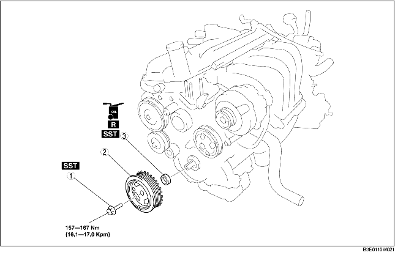

1. Demontera batterikåpan.
2. Lossa batteriets minuskabel.
3. Demontera drivremmen. (Se BYTE AV DRIVREM [ZJ, Z6].)
4. Demontera i den ordning som anges i tabellen.
5. Montera i omvänd ordning mot demonteringen.

1. Lås vevaxelns remskiva med hjälp av specialverktygen.
2. Ta bort monteringsbulten i vevaxelns remskiva.
1. Ta bort av kanten på oljetätningen med en rakbladskniv.
2. Ta bort oljetätningen med en platt skruvmejsel, där spetsen skyddas med en trasa så att vevaxelns oljetätning inte skadas.
1. Stryk på ren motorolja på den nya främre oljetätningen.
2. Sätt i den främre oljetätningen i främre motorkåpan för hand.
3. Knacka fast oljetätningen jämt med hjälp av specialverktyget och en hammare.
1. Lås vevaxelns remskiva med hjälp av specialverktygen.
2. Dra åt monteringsbulten i vevaxelns remskiva.